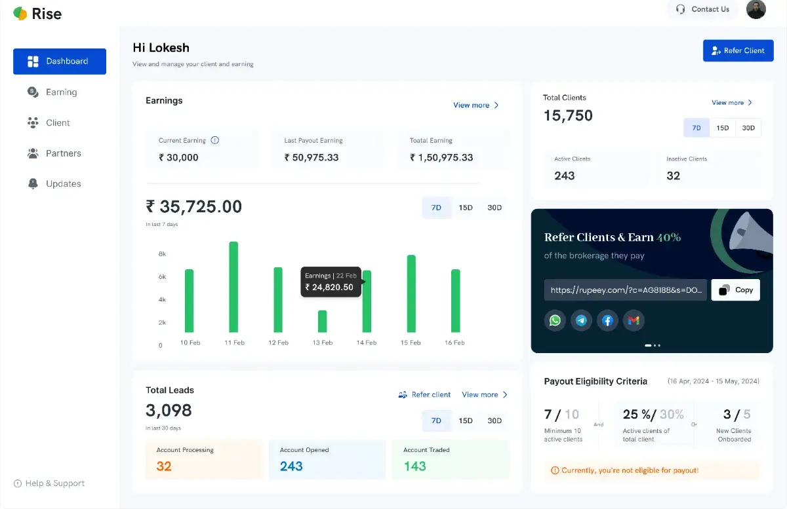
Four screens, built to answer the two questions every phone call was about.
Case study · Rise Portal
The first product Rupeezy’s partners ever had
Around a hundred people brought in a third of the revenue, and none of them could check what they were owed.
Rupeezy was called AsthaTrade until the rebrand, so the old domain appears in these screens.
Every month, about a hundred people rang Rupeezy to ask how much they had earned. The answer lived in a spreadsheet, and only the person holding it could read it.
Those people were partners. They referred traders, they earned a share of what those traders paid in brokerage, and together they brought in about a third of the company’s revenue. None of them could see any of it.
I built the first product they ever had. Then I made a bet about what they would do with it.
Background
The money moved where they could not watch it
Rupeezy’s digital partners are traders with a following. They share a link. Someone signs up. That person completes KYC. That person trades. The partner earns a cut of the brokerage.
Around a hundred of them, bringing in about 35% of company revenue.
The partner can see none of this
And the share itself moved. Ten percent to sixty, depending on the period.
The partner controls the first step and collects the last. Everything in between decides the amount, and all of it happens out of sight.
Discovery
I had never worked in broking, and I never met a partner
This was my first project at Rupeezy. The PRD was full of words I did not know. I learned the business before I opened Figma.
- Brokerage share
- what the partner earns per trade
- Payout cycle
- monthly, paid on the 15th
- Lead vs client
- number entered vs KYC completed
- Active client
- traded recently, not just signed up
The vocabulary, before I could read the brief.
User
~100 partnersTraders with a following. They refer, their referrals trade, they earn a share of the brokerage.
Calls, daily · proxy
The support deskTook partner calls every day. Whatever partners actually wanted to know arrived here first.
Relayed
Me, sole designerFirst project at Rupeezy. Responsive web, desktop and mobile, end to end.
Also in reach: Kunal, the PM, who mapped where the money moved. The business team, who owned the commission model.
How I learned what I knew
Working sessions with Kunal to trace the money. Time with the support desk going through what partners actually rang about. That was the discovery, and it was second hand by definition.
“I onboard 15–20 users every week, but I have no idea how they’re performing.”
A partner, relayed by the support team.
I never spoke to a digital partner. I had the people who answered their calls. Good proxies, still proxies.
The problem
Refer more, earn less, and no way to find out why
A partner who wanted to know how their leads had converted rang their relationship manager, who opened a spreadsheet and read the numbers back.
A hundred partners, referring daily, every one of them entitled to ask at any time. The share moved by period, anywhere from ten percent to sixty. Payouts landed on the 15th.
“Last month I referred 100 people and earned X. This month I referred 200 and earned less. Why?”
The call the support team took most.
What the payout actually depended on
Leads
Who verified their identity
Clients
Who actively invested
Volume
Total investment amount
Rate
Monthly earnings share
The partner could see none of it. Only the total, once a month, on the 15th.
When a third of your revenue runs through people who cannot check their own income, that is not a reporting gap. That is a trust problem.
Goals
Two questions, answered before anyone had to ask
Every call came down to the same two things. The product exists to answer them.
Question one
“How many of my leads converted?”
Question two
“How much will I earn this cycle?”
For the business
Transparency, visibility and trust. The relationship was leaking on all three, and a third of revenue ran through it.
For the partner
See your own business. Where every referral is, what is stuck, what each day earns. Enough to decide where to put effort next.
Every screen answers one of those two questions. And the funnel was built so a partner could act on what they saw.
Principle
Show the calculation, not just the total
If a partner can see how a number was made, they do not need to ring anyone to ask.
Responsive web, both ends. The same sections in a bottom navigation on mobile, with charts and tables restacked for one thumb.
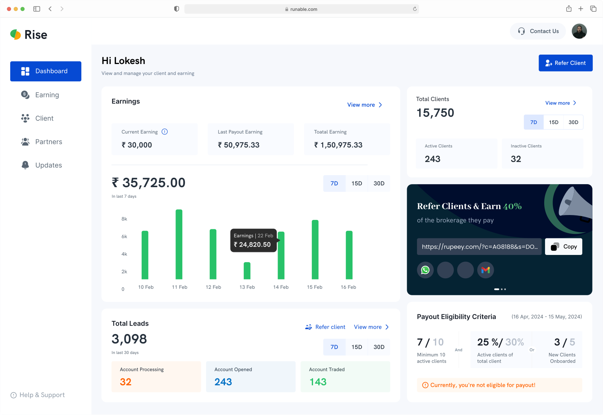
The dashboard
Earnings three ways, current cycle, last payout and all time, with a daily chart. Below it the funnel: total leads, then the three states a lead can be in.
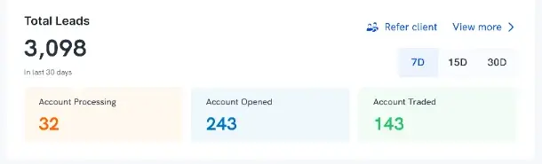
The funnel is the answer to “why did I earn less”. A partner watches their own referrals move and sees where the drop happens.
The funnel was not only reporting. A partner who sees a referral stuck at account processing knows that person by name. I designed it so they would pick up the phone themselves, and so their call would land better than ours ever could.
Nobody asked for that. That was the bet.
Nothing about the money is computed out of sight.
Constraints
A rule I could not simplify and a number I could not show
One rule that couldn’t be simplified, and one piece of data that couldn’t be shown.
The rule
Partners are not paid automatically every cycle. Ten active clients, mandatory, AND either thirty percent of total clients active OR five new clients that cycle. The rule came from the business and it was not moving. Partners needed to read their own status, not parse a logic expression.

Each condition as its own fraction, with the AND and the OR visible. Someone three clients short can see which lever to pull.
“A message saying only ‘you’re not eligible for payout’ would produce exactly the phone call the whole product was built to remove.”
Kunal, Product Manager
- The call
- Where payout eligibility sits on the dashboard.
- Considered
- Top of the page. It decides whether a partner gets paid, so it was argued to be the most important thing there.
- Chose
- Bottom right. Eligibility is one-time information. You need it while you are working toward the threshold and you stop looking once you have met it. Earnings and clients get checked every visit.
- Cost
- A partner who has never read the rule has to scroll to find it.
I also considered hiding the card once a partner qualified, and rejected it. A dashboard that rearranges itself by state is harder to learn than one that stays still.
The number
As a regulated broker we cannot expose a client’s phone number. Not to partners, not to anyone. But most partners already collect contact details on their own forms, so what they needed from the portal was never the number. It was the match.
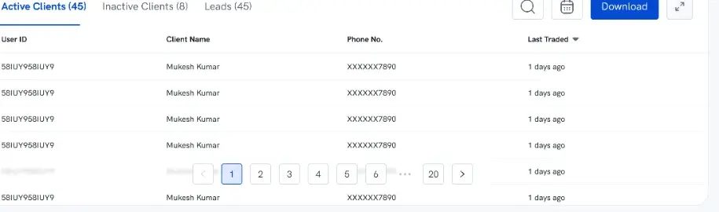
XXXXXX7890 is enough to find a record you already hold, and nothing on its own.
Name, masked digits, status, last activity. The smallest set that lets a partner join the portal to their own spreadsheet, and no more than that.
The cost is real, and it falls on one group. A partner who kept no records of their own cannot reach a stuck lead through the portal at all.
The screens
Earnings, clients, and the list that became a call sheet
Three more screens, and a mobile version built for one hand.
Earnings
Earnings plotted against total clients and against traded clients, so a partner can see which clients actually generate revenue. Below it, payout history with bank account, cycle, amount, deductions and date.

Deductions are a line item, not netted off quietly. A payout traces back to the clients who generated it.
The daily chart does more than total things up. A partner can see that Monday and Friday carry the volume, and put effort into the weaker days, where the same work returns more.
Clients
Every client with their last-traded date, split into active and inactive. Not by signup date, not alphabetically.

The list that became a call sheet. Last-traded date makes “who do I ring today” a one-glance decision.
Mobile
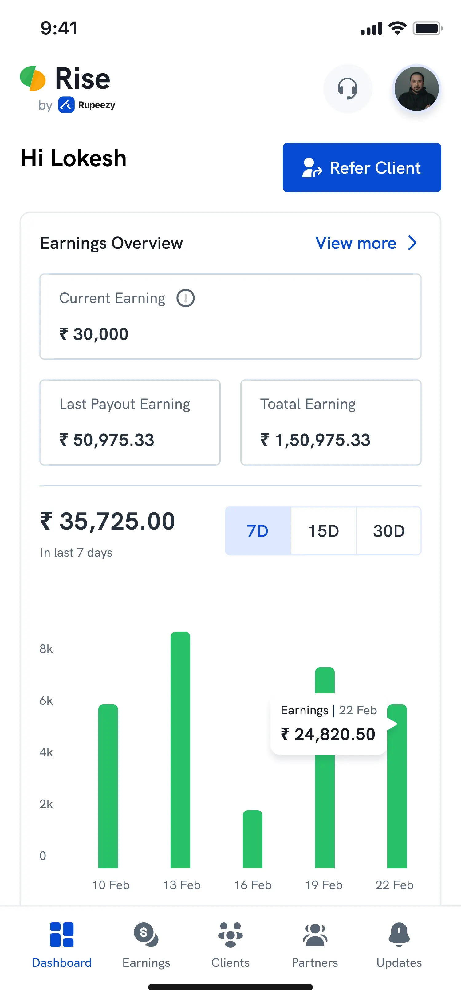
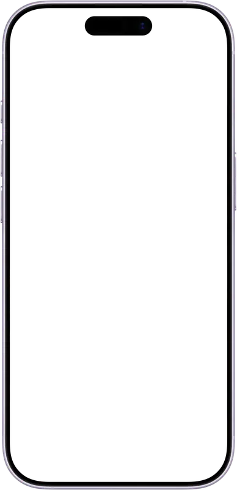
Dashboard
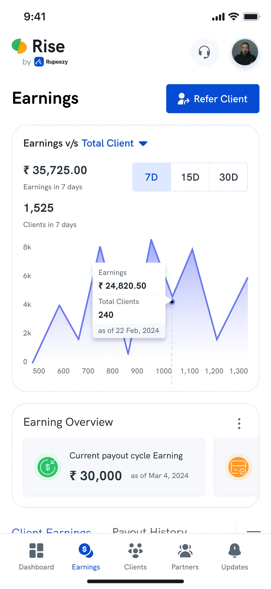
Earnings
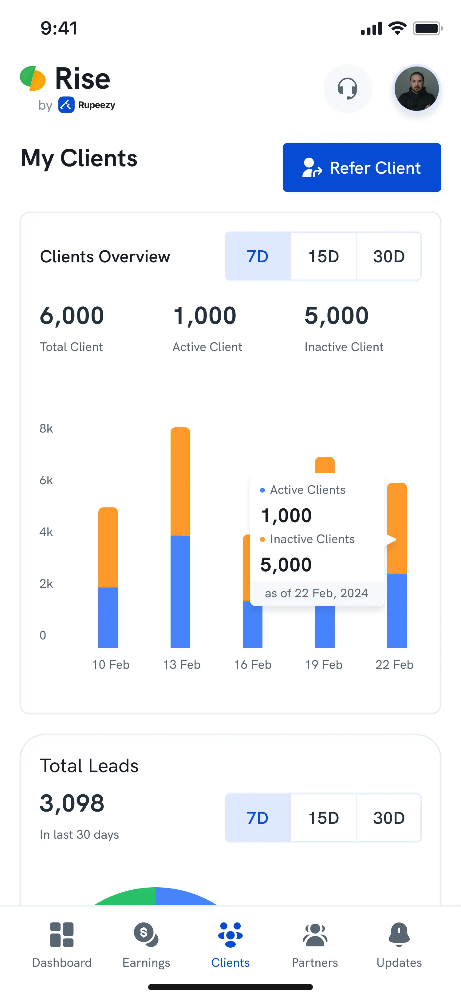
My Clients
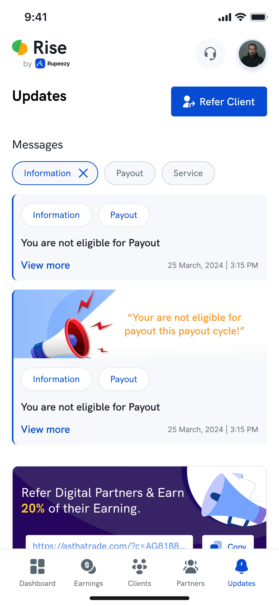
Updates
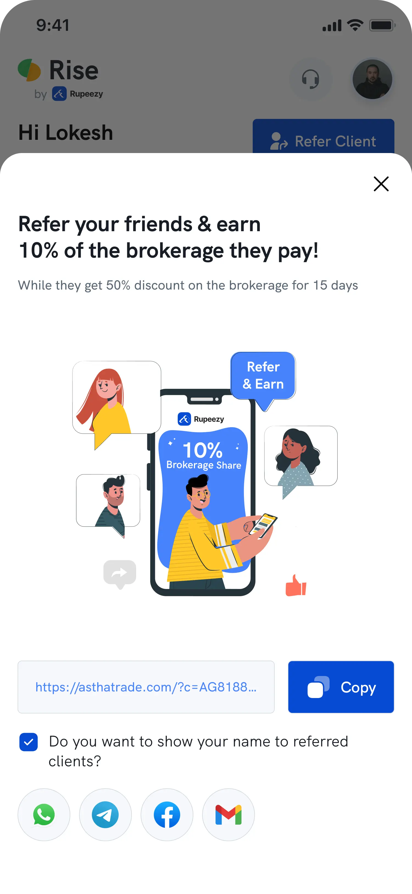
Refer and Earn
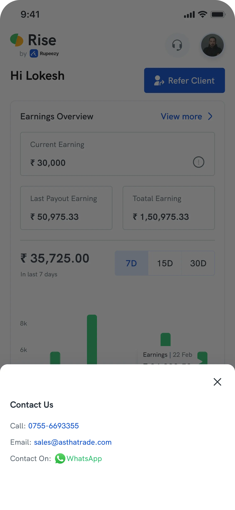
Contact Us
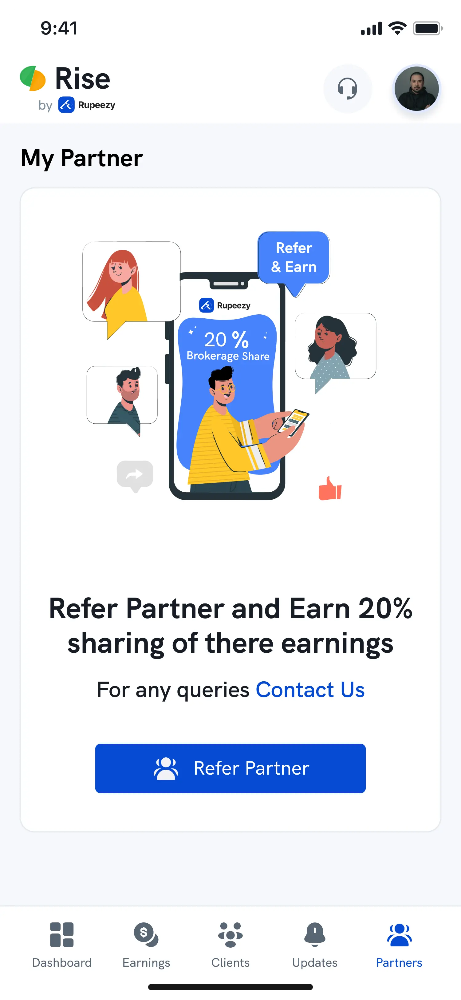
My Partner
The same sections, restacked for one hand.
Important and frequent are not the same thing. Layout follows frequency.
The bet
The bet came in
I designed the funnel so a partner could see a lead stuck at account processing and go after that person themselves. Nobody asked for it. It was a bet that self-interest would beat a support queue.
Two months after launch the business team confirmed it. Partners were chasing their own stuck leads. An inactive client was getting a nudge from the person who had referred them, because an inactive client earns that person nothing.
Rise Portal turned a hundred partners into a sales layer that costs nothing.
And a way to recruit
The portal became something the business team could put in front of a prospective partner. Before, the pitch was a commission rate. After, it was a screen.
What I did not have
I never spoke to a partner. I designed for a behaviour I predicted and could not observe, and five conversations before launch would have told me how close the bet was. We never agreed what this should move, so the 2.4× and the 48% exist because I went and asked the business and support teams afterwards. And I argued the eligibility placement on frequency alone. I was right, and I had nothing to show at the time.
What I can claim
The commission structure did not change in that window, but I did not own the analytics. I am reporting what the teams closest to the data reported.